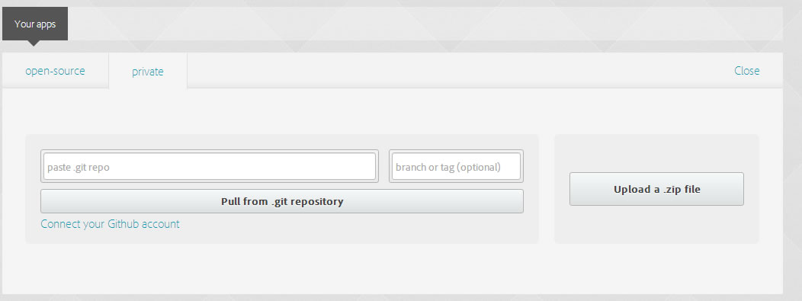

Karenderia Mobile App
- created: 11/23/2015
- by: bastikikang
- email: basti@codemywebapps.com
Karenderia Mobile App is ordering application for Karenderia Multiple Restaurant System
Features
Online Easy Ordering
- Easy to search for restaurant
- Filter restaurant by cuisine or by services
- Auto detects location address
- Multiple addons for food item
- Multiple size and price for food item
- Ingredients selections for food item
- Cooking reference
- Real time order status
- Easy to re-order previous ordered food item
Payment Gateway
- Cash on delivery
- Paypal
- Pay using credit cards on debit cards
Book a table
- Easy booking table
- Receive updates on your booking status
Restaurant Review
- Add your own reviews to a restaurant
Android Push Notification
- Customer can receive push notification about the status of their order
Live Demo
See the Karenderia mobile app in action?
Download android APK File click here
Watch Karenderia mobile app in action click here
Installation
First you need to install the mobile app modules on your karenderia multiple restaurant system these will include the mobile api engine and mobile app settings.
1. create a folder called modules on protected folder
2. copy the folder modules/mobileapp to protected/modules (mobileapp is the file where you download from Codecanyon)

3. open the file /protected/config/main.php and add the following code after the line 'language'=>'default',
'modules'=>array( 'mobileapp'=>array( 'require_login'=>true ) ),Where require_login = true this means you need to login to admin panel before you can use see the Mobile app settings
if you don't want to use it without login to admin then set the value to false
it should be like the screenshot below
4. Now add the Mobile app modules on admin menu, open the file /protected/components/functions.php and look for functions adminMenu()
add the line below after the menu SEO
/**add ons */
array('visible'=>$this->AA('addons'),'tag'=>'addons',
'label'=>''.Yii::t("default",'Add-ons'),
'itemOptions'=>array('class'=>''), 'items'=>array(
array('visible'=>$this->AA('addonexport'),
'tag'=>'addonexport','label'=>''.Yii::t("default","Export/Import"),
'url'=>Yii::app()->getBaseUrl(true)."/ExportManager"),
array('visible'=>$this->AA('mobileapp'),
'tag'=>'mobileapp','label'=>''.Yii::t("default","MobileApp"),
'url'=>Yii::app()->getBaseUrl(true)."/mobileapp"),
)),
/**add ons */
see screenshot below

5. To see the mobile app settings,
Login to admin panel edit your account (admin-> User list)
under the User Access tick the Add-ons and MobileApp an save your account then logout and relogin again
to see the addon menu

After you have re-login you should see now the Mobile app settings section
see screenshot below
Another options to access the Mobile App modules just simple type the address on your browser
http://localhost/mobileapp/ if you install the kmrs on folder restomulti then the address is http://localhost/restomulti/mobileapp/
see screenshot below

6. Add Paypal Mobile app settings on your current admin & merchant paypal settings
(note: if your version of kmrs is 2.7 and up you will not have to do this steps is already added on the backend)
- a. open the file protected/views/admin/paypal-settings.php
add the following code (click here) after line 140 or after the live Paypal Signature - b. open the file protected/views/merchant/paypal-settings.php add the following code (click here) after line 128 or after the live Paypal Signature
-
c.
add action to save the paypal settings for admin and merchant
open the file protected/components/AjaxAdmin.php
for admin look for the functions saveAdminPaypalSettings()
Yii::app()->functions->updateOptionAdmin("adm_paypal_mobile_enabled", isset($this->data['adm_paypal_mobile_enabled'])?$this->data['adm_paypal_mobile_enabled']:''); Yii::app()->functions->updateOptionAdmin("adm_paypal_mobile_mode", isset($this->data['adm_paypal_mobile_mode'])?$this->data['adm_paypal_mobile_mode']:''); Yii::app()->functions->updateOptionAdmin("adm_paypal_mobile_clientid", isset($this->data['adm_paypal_mobile_clientid'])?$this->data['adm_paypal_mobile_clientid']:'');for merchant look for the functions savePaypalSettings()
Yii::app()->functions->updateOption("mt_paypal_mobile_enabled", isset($this->data['mt_paypal_mobile_enabled'])?$this->data['mt_paypal_mobile_enabled']:'',$merchant_id); Yii::app()->functions->updateOption("mt_paypal_mobile_mode", isset($this->data['mt_paypal_mobile_mode'])?$this->data['mt_paypal_mobile_mode']:'',$merchant_id); Yii::app()->functions->updateOption("mt_paypal_mobile_clientid", isset($this->data['mt_paypal_mobile_clientid'])?$this->data['mt_paypal_mobile_clientid']:'',$merchant_id);
You should see this settings by now on admin -> payment gateway -> paypal and merchant -> paypal settings
7. add the hook for sending push notification when the merchant change the order status
open the file /protected/ajaxadmin.php and look for the functions updateOrder()
on line 3254 add the following lines after the line $DbExt->insertData("{{order_history}}",$params_history);
/** Mobile save logs for push notification */ Yii::app()->setImport(array( 'application.modules.mobileapp.components.*', )); AddonMobileApp::savedOrderPushNotification($this->data);
see below screenshot:
8. Update your database with the new table and fields required to run the mobile app, go to mobile app modules just click on the update db tables menu
9. Set the push notification cron jobs to receive push notification on your mobile,
you will need to set the cron jobs on your
server cpanel as http cronjobs
you can find the cron job links on your mobile app modules Push cronjobs menu.
eg. linux command CURL http://yourserver.com/mobileapp/cron/processpush
Build your app using phonegap build
To build or compile your mobile app you need to have account on http://build.phonegap.com click here to signup then choose the free package
1. Set your mobile app settings, open the file www/js/config.js and change the value according to your settings
var krms_config ={
'ApiUrl':"YOUR_API_URL",
'DialogDefaultTitle':"YOUR_OWN_DIALOG_TITLE",
'pushNotificationSenderid':"YOUR_ANDROID_PUSH_PROJECT_ID",
'facebookAppId':"YOUR_FACEBOOK_APP_ID"
};
Where:ApiUrl = the link of your api [this is mandatory]
you can find your mobile api link on your mobile app settings under general settings.
usually the link will be like this http://yourserver.com/mobileapp/api
DialogDefaultTitle = this is the dialog title that will appear on your mobile app eg. MyStore
pushNotificationSenderid = this is your google android push notification project id [this is mandatory]
go to sections How to create google android project on how to get your push sender id
facebookAppId = this is your facebook app id [this is optional]
if this is empty the facebook login will not be available on your mobile app.
you can go to sections How to setup your facebook login
see below config.js screenshot:

2. Change the app name, app description and author. open the file www/config.xml
- a. change the name to your own app name
- b. change the author email and auhor name
- c. change the app description to your own
- d. change the app id to your own eg. kmrs.mobile.app to yourown.app
see below screenshot:

3. Zip the required mobile files go to the folder kmrsmobile and select all the files and add to zip.
note: the zip files should contain the following files www folder, icon.png, splash.png and config.xml
you will need to install Winzip to zip the files
or Winrar
by now you should have the file as zip format see below screenshot:
Important : when you zip the file make sure you are inside the folder kmrsmobile don't zip the whole folder kmrsmobile it will not work

4. Login to your https://build.phonegap account then go to App menu on top or follow this link https://build.phonegap.com/apps
5. Click on Upload a .zip file or Update Code see below screenshot:

6. Download your mobile app APK File
the APK file is the installer file for your android mobile phone
you can transfer this to your mobile phone via bluetooth or wifi connections
see below screenshot
7. Finish :) Congratulation your all done
NOTE:
if you want to publish your app on google play you will need a private key
see Android signing tutorial for phonegap build
http://docs.build.phonegap.com/en_US/signing_signing-android.md.html
How to create google android project
This section is quick guide on how to obtain your pushNotificationSenderid and Android Push API Key
1. login to your google developer account https://console.developers.google.com/home
2. Create a new project give it a project name.
see below screenshot:

after you have created a project you will be redirected to dashboard.
now you will see your pushNotificationSenderid eg. 157XXXXXXX41
Project number
see below screenshot:

3. Now enabled the API Google Cloud Messaging for android
see below screenshot:

4. Generate Android Push API Key go to api manager -> credentials -> add credentials -> API Key -> choose Android key
After you have created api key you will be presented with the api key this key you will have to set this on your mobile app settings
under general settings

5. Finish :)
How to setup your facebook login
This section will quick guide you on how to setup your facebook login on your mobile app
NOTE: your facebook api version should be v2.5
1. login to your facebook developer account https://developers.facebook.com/
2. Create a new app -> choose website
3. after you create new app you will be redirected to dashboard and you will see your app id
see below screenshot:
4. Go to settings under basic set your website address https://localhost/www/
and make sure you put a correct email address on contact email fields
see below screenshot:

5. Go to Advanced tab and make sure the Embedded Browser OAuth Login is enabled
and add the following Valid OAuth redirect URIs
https://www.facebook.com/connect/login_success.html
and
http://localhost/kmrsmobile/www/oauthcallback.html (this link is optional and will depends in your local development path)
see below screenshot:

6. Go to Staus & Review make sure the app is set to public
see below screenshot:

How to setup your paypal
This section is a quick quide on how to obtain your paypal client id
1. login to your paypal developer account https://developer.paypal.com/
2. go to dashboard -> My Apps & Credentials -> create app
see below screenshot:
3. after you have created a new app you will now able to see your client id.
to get the live client id just click on the live button on the top right corner
see below screenshot:

4. Set the client id on your mobile app settings under general settings
see below screenshot:
5. Finish :)
How to translate the app
To translate the karenderia mobile app to your own language please follow the steps.
1. translate the backend and api response.
open the file /mobileapp/mobileapp-lang-backend.php you will see the list of words
that needed to translate, after you given the correct translation just copy this to your existing language on KMRS.
note: a quick and easiest way is to edit the language file in your server directly. you will find
your current language file on the folder /upload
2.
To translate the mobile app, login to your admin panel and go to mobile app modules
and click on Mobile translation. translate all the words and saved.
note: to add a new language you will need to go to admin -> manage language and add new language file
and go back to mobile modules -> Mobile translation you should see the new language added in a tab.
Frequently Asked Questions
What version of KMRS this modules will run?
- Mobile App modules will run on version 2.4 and up,
if you are using old version contact me here
How to change the mobile app logo on home section of the app?
- just replace the following files on www/css/images/banner.png (take note of the width and height of the image)
How to change the default logo for merchant and food item?
- go to mobile app modules on general settings -> Default Image upload your own logo
How to change the orange header background color on home section of the app?
- open the file www/css/app.css look for the css .orange-header under that change the background properties
background:#f75d34;
How to change the app icon and splash screen
- replace the following files kmrsmobile/icon.png and kmrsmobile/splash.png
for the icon/splash screen make sure the it has a valid size according to different device
see this link for more information http://docs.build.phonegap.com/en_US/configuring_icons_and_splash.md.html
After compile hydration appears
You will need to disabled the phonegap Hydration
After logging in navigate to the apps page, and select your app by clicking its title or icon. On the app's detail page, open the "Settings" panel. Under the "Basic" header de-select the checkbox labeled "enable hydration", and finally hit save.
You've now successfully disabled Hydration.
After compile and upload to build.phonegap the app does not connect to API
if you upload the zip file on build.phonegap the icon does not show or the app does not load,
reason is maybe you zip the whole folder kmrsmobile this is not correct make sure you are inside the folder kmrsmobile
and select all the files and add to zip
Installing the app return errors package is not valid
maybe you put some special charaters on config.xml ,
xml does not like special charaters like ? and ,
Changelog
Important: when there is new update please run the update DB Tables.
simple by going to mobileapp modules backend and click on Update Db Tables
= 1.3.2 (23 Feb 16) =
- fixed order addon item and notes not inserting correctly on database
- fixed search results layout and browse restaurant
- fixed food item layout
- fixed pre-order status tag, it shows open even if the merchant has pre order
- fixed tax if food item is non taxable
- fixed food item non taxable not saving on database
- fixed notes not adding on merchant receipt panel as well as receipt
- fixed formating of total price
= 1.3.1 (18 Feb 16) =
- add offers on search results and browse restaurant
- remove checking of net connection always set to true
- remove default set address "970 N Western Ave, Los Angeles, CA, United States"
= 1.3 (16 Feb 16) =
- fixed open,close and pre-order tag on search result and browse restaurant during translation
- fixed scroll issue on browse restaurant and search results page on lower android version
- fixed cannot back to previous page on receipt page
- fixed NaN value on cart when selecting item with no price
- fixed cannot select on sub item on different sub item category
- add contact number on profile
- auto fill contact number during checkout when selecting from address book
= 1.2 (10 Dec 15) =
- add translation features
- add push notification broadcast
- add IOS push notification
- add apply voucher
- fixed re-order item if the order was done on website
= 1.1 (03 Dec 15) =
- fixed price error if food item has no price
- fixed asking too much permission when installing on mobile device
- fixed creating view table
- fixed payment type not saving
- add sending of email to customer and merchant when there is new order
- add sending of sms notification to customer and merchant
- add options compile the app to ios and windows mobile
- fixed facebook login to work on facebook api v2.5
- add options if food item is not available
- add paypal card fee
- add new database table _mobile_temp_email
= 1.0 (28 Nov 15) =
- Initial release version
Sources and Credits
Thanks so much to
Finally
I spent a lot of time on this thing. Nevertheless it's still not finished. I like to improve it wherever I can and appreciate your feedback. I'd be glad to help you if you have any questions relating to this mobile appp. No guarantees, but I'll do my best to assist.